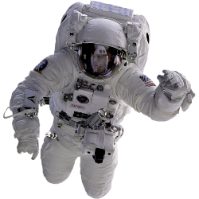
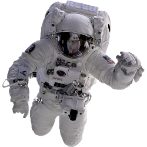
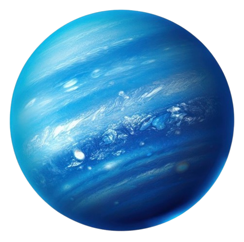
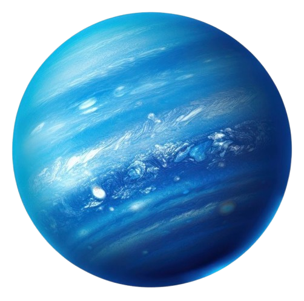
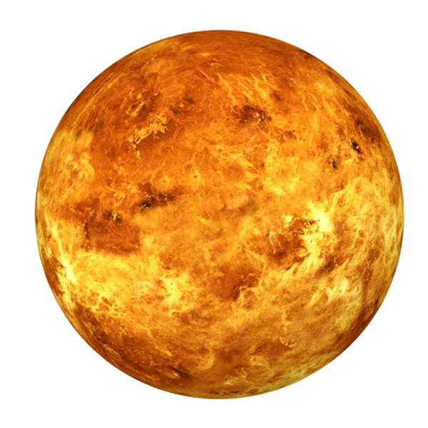
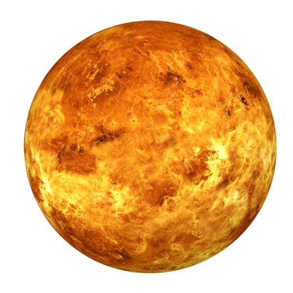

 

 

Cosmic Ventures: Exploring Space
The Beauty of Space
Space, the final frontier, is an awe-inspiring expanse that captivates the imagination and stirs the soul. It is a vast and enigmatic realm that stretches beyond the confines of our planet, offering glimpses into the wonders of the universe. The beauty of space lies not only in its breathtaking visuals but also in its profound mysteries and the sense of wonder it evokes. One of the most striking aspects of space is its sheer immensity. The vastness of the cosmos, with its countless galaxies, stars, and planets, is both humbling and exhilarating. The night sky, adorned with twinkling stars and shimmering constellations, serves as a reminder of the boundless possibilities that exist beyond our world. Each star is a distant sun, each galaxy a cosmic metropolis, and each planet a potential cradle of life. The infinite nature of space invites us to dream, to explore, and to seek answers to the fundamental questions of existence. The celestial bodies that inhabit space are a testament to the universe's creativity and diversity. From the fiery brilliance of the sun to the serene beauty of the moon, each object in the night sky has its own unique charm. Planets like Jupiter, with its swirling storms and majestic rings, and Saturn, with its stunning rings of ice and rock, showcase the intricate and dynamic nature of the solar system. Nebulae, vast clouds of gas and dust, are cosmic nurseries where new stars are born, their vivid colors and intricate shapes forming some of the most mesmerizing sights in the universe. Beyond the visual spectacle, space also holds profound mysteries that challenge our understanding of the cosmos. Black holes, enigmatic regions of spacetime where gravity is so strong that nothing can escape, push the boundaries of our knowledge and inspire scientific inquiry. The search for extraterrestrial life, the study of dark matter and dark energy, and the exploration of distant exoplanets are all driven by our innate curiosity and desire to uncover the secrets of the universe. Each discovery, no matter how small, adds to our collective understanding and appreciation of the cosmos. The beauty of space is not just confined to what we can see and study; it also resides in the sense of wonder and inspiration it instills in us. The night sky has been a source of fascination for humanity since time immemorial, inspiring countless myths, stories, and works of art. It has driven scientific advancements, from the invention of the telescope to the development of space travel. The Apollo missions, which saw humans set foot on the moon, stand as a testament to our ability to dream big and achieve the seemingly impossible. In conclusion, the beauty of space is multifaceted, encompassing its vastness, the celestial bodies within it, the mysteries it holds, and the inspiration it provides. It is a realm that invites exploration and contemplation, urging us to look beyond our own world and ponder the infinite possibilities that lie beyond. As we continue to explore and uncover the secrets of the universe, the beauty of space will remain an enduring source of wonder and awe.
Why should we explore Space?
-
Scientific Discovery:
Space exploration allows us to learn more about the universe, including the formation and behavior of celestial bodies, which can lead to groundbreaking discoveries in science and technology.
-
Inspiration and Innovation:
Space missions inspire creativity and innovation, leading to advancements in various fields, such as robotics, medicine, and materials science, which can improve life on Earth.
There are two main reasons why we must explore Space:
If you want to add a space exploration into your bucket list?
-
Have Curiosity and Passion:
An insatiable curiosity about the universe and a passion for learning will drive you to explore the unknown and seek out new discoveries beyond our planet.
-
Education and Training:
Acquiring knowledge in fields such as astronomy, physics, engineering, or space science will equip you with the skills and understanding necessary for space exploration. Specialized training, such as becoming an astronaut or working in the space industry, can also be essential.
-
Resilience and Adaptability:
Space exploration is challenging and often unpredictable. Developing resilience and the ability to adapt to new and potentially harsh environments will help you navigate the physical and mental demands of exploring space.